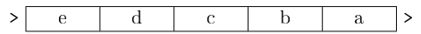

C6 Structures de données linéaires
Activités
 Activité 1 : Notebook d'introduction
Activité 1 : Notebook d'introduction
Cours
Vous pouvez télécharger une copie au format pdf du diaporama de synthèse de cours présenté en classe :
Attention
Ce diaporama ne vous donne que quelques points de repères lors de vos révisions. Il devrait être complété par la relecture attentive de vos propres notes de cours et par une révision approfondie des exercices.
Exercices
Exercice 1 : Choix d'une structure de données
Dans chacune des situations suivantes, indiquer en justifiant votre réponse, quelle structure de données pourrait être adoptée :
- La gestion du bouton "Revenir à l'étape précédente" d'un logiciel de retouche d'images.
- Une application permettant de gérer une liste de courses dans laquelle on peut ajouter/supprimer/modifier des éléments.
- L'envoi de travaux d'impression à une imprimante.
- La représentation dans un programme d'un plateau de jeu (comme un équiquier ou un damier) dont on connaît à l'avance les dimensions.
- La saisie d'une ligne de commande dans un terminal où on ne peut utiliser que la touche retour arrière pour éditer ses commandes
Exercice 2 : Le module deque de Python
Bien que Python ne propose pas de façon native le type abstrait de donnée file, le module collections permet d'importer deque (double ended queue). Cette structure de données permet l'insertion ou la suppression aux deux extrémités en temps constant (donc en \(O(1)\)). Elle correspond à des listes chaînées disposant d'un accès direct au premier et au dernier élément (d'où le nom double ended). L'insertion d'un élément en début d'un objet de type deque s'effectue à l'aide de la méthode appendleft et la suppression d'un élément en fin s'effectue (comme pour les listes de Python) à l'aide de la méthode pop.
-
Importer
dequedepuis le modulecollections, et écrire puis tester une nouvelle implémentation de file utilisant un objet de typedequeplutôt qu'une liste.Aide
La fonction
lenexiste sur les objets de typedequeet pourra être appelée pour tester si la file est vide. -
Vérifier que cette nouvelle implémentation est plus efficace que l'implémentation sous forme de liste vue ci-dessus.
Aide
Comparer par exemple les temps d'exécution pour enfiler puis defiler les entiers de 1 à un cent mille.
-
Reprendre ce qui a été vu dans le notebook d'introduction à ce chapitre et tracer les graphiques de temps d'exécution en fonction de la taille de la file.
-
Compléter cette nouvelle implémentation par les méthodes suivantes :
- Un attribut
tailleainsi qu'une méthodeget_taillepermettant de lire le nombre d'éléments dans la file. -
Une méthode d'affichage d'un objet file (séparer les éléments par des virgules et choisir les caractères de début et de fin).
Aide
Les objets de type
dequeautorisent l'accès par indice avec la notation crochet (comme les listes de Python). -
Un attribut
taille_maxfixant une taille maximale pour la file, si cette taille est dépassée, on ne peut plus enfiler.
- Un attribut
-
Dans la documentation du module
dequeon peut lire : "L'accès par indice est en O(1) aux extrémités mais en O(n) au milieu. Pour des accès aléatoires rapides, il est préférable d'utiliser des listes.". Justifier rapidement, par exemple par un schéma, ces remarques sur la complexité des opérations et la comparaison avec les listes de Python.
Exercice 3 : Manipulation d'une pile
On suppose qu'on dispose d'une pile notée P et de son interface usuelle, c'est à dire :
est_vide,empileetdepile.
Ecrire une fonction qui échange les deux éléments, situés au sommet de la pile. Si la pile contient moins de deux éléments, la fonction ne fait rien.
Par exemple si la l'état de la pile est |a,b,c,d>, elle devient |a,b,d,c> comme illustré sur le schéma ci-dessous :
Attention
On ne doit utiliser que l'interface d'une pile par conséquent la notation usuelle de Python avec les crochets pour accéder aux éléments d'une liste n'est pas autorisée !
Exercice 4 : Retour sur l'implémentation d'une pile
On revient sur l'implémentation d'une pile en Python à l'aide de la poo (déjà vu dans le notebook d'introduction à ce chapitre) :
class Pile:
def __init__(self):
self.contenu = []
def empiler(self,element):
self.contenu.append(element)
def est_vide(self):
return self.contenu==[]
def depiler(self):
assert not self.est_vide(), "Pile vide"
return self.contenu.pop()
- Recopier et enregistrer cette implémentation de façon à disposer d'un module
Pileque nous pourrons utiliser par la suite. - Dans cette implémentation, la pile est représentée par une liste de Python, le sommet de la pile est-il le début ou la fin de cette liste ? Ce choix est-il judicieux ? Justifier votre réponse.
-
Compléter cette implémentation en ajoutant :
-
Une méthode d'affichage en séparant les éléments par des virgules et en adoptant les caractères de votre choix pour le début et la fin de la pile.
Aide
Pour le problème de la virgule après le dernier élément, on peut utiliser un slice pour l'enlever, ou alors faire un test permettant de ne pas mettre de virgule lors qu'on atteint le dernier élément.
-
Une méthode
sommet, permettant de lire la valeur situé au sommet de la pile sans l'enlever. - Un attribut
tailleà la pile indiquant le nombre d'éléments contenus dans la pile. -
Un attribut
taille_maxà la pile, lorsque cette taille est dépassée, on ne peut plus empiler.Aide
Le module
mathde Python propose la constanteinfpour simuler l'infini, on pourra donner cette valeur par défaut àtaille_maxde façon à avoir une pile de taille "infinie" lorsque le paramètretaille_maxn'est pas donné.
-
-
En utilisant le module
Pile, écrire une fonction Python qui prend en entrée une liste et renvoie cette liste retournée. Par exempleretourne([1,2,3])renvoie[3,2,1].Aide
On rappelle (voir activité) qu'il suffit d'empiler les éléments de la liste puis de les dépiler.
Exercice 5 : Expression bien parenthésée
On dit qu'une expression est bien parenthésée lorsque chaque parenthèse ouvrante est associée à une unique parenthèse fermante et inversement. Par exemple, on a souligné dans l'expression suivante le problème de parenthésages : \((3+2)\textcolor{red}{\underline{)}}-(4+1)\)
-
Les expressions suivantes sont-elles bien parenthésées ? Sinon, indiquer l'emplacement dans la chaîne de caractères où l'erreur est détectée.
- \(3+(5-4\div(3+2)))+10\)
- \(((3+2)\times 5\)
- \(5)-4\times2(\)
- \(((3+2)\times(5-3))\)
-
Ecrire une fonction
bien_parentheseequi prend en argument un expression (sous la forme d'une chaine de caractères) et qui renvoie \(-1\) lorsque l'expression est bien parenthésée et sinon un entier indiquant l'emplacement dans l'expression où l'erreur de parenthésage est détectée.Aide
On pourra, parcourir l'expression et utiliser une pile qui stocke les indices de chaque parenthèses ouvrante. On dépile, lorsqu'on rencontre une parenthèse fermante.
-
Tester votre fonction sur les expressions de la question 1.
-
Utiliser cette fonction afin de produire un affichage de l'erreur à la façon de Python c'est à dire avec un caractère
^en dessous de l'erreur. Par exemple : \((2+3)\underset{\textcolor{red}{\wedge}}{)}-5\) -
Poursuivre ce travail en travaillant sur des expressions pouvant contenir simultanément d'autres types de parenthèses, par exemple :
[]ou encore{}.
Exercice 6 : Implémentation naïve d'une file
On souhaite implémenter une file en Python à l'aide d'une liste de Python et de la poo à la façon de ce qui a été fait pour les piles dans l'exercice 4.
- Recopier et compléter le code ci-dessous de façon à ce qu'on enfile un élément en l'ajoutant en début de liste. (et que donc on défile en enlevant en fin de liste.
class File: def __init__(self): self.contenu = [] def enfiler(self,element): self.contenu = ............. def est_vide(self): return self.contenu==[] def defiler(self): assert not self.est_vide(), "File vide" return self............. - Tester cette implémentation en créant une file dans laquelle on enfilera puis défilera les entiers de 1 à 100.
-
Reprendre le test précédent en mesurant les performances du programme pour les entiers jusqu'à cent mille.
Aide
Par souci de simplicité, on utilisera la fonction
timedu moduletime(même si le temps d'exécution mesuré dépend d'autres facteurs). -
Cette implémentation est-elle satisfaisante en terme de complexité des opérations ? Justifier.
- Même question si on décide, plutôt d'enfiler en fin de liste (et donc de défiler en début).
Exercice 7 : Implémentation d'une file avec deux piles
On considère la file suivante :

On peut aussi la schématiser sous la forme de deux piles :
 Pour comprendre ce fonctionnement, on part d'une file vide et on montre par quelques exemples l'état de la file et des deux piles qui la représente :
Pour comprendre ce fonctionnement, on part d'une file vide et on montre par quelques exemples l'état de la file et des deux piles qui la représente :
| Etape | Opération | Etat de la file | Pile d'entrée | Pile de sortie |
|---|---|---|---|---|
 |
Enfiler a |
>a> |
|a> |
|> |
 |
Enfiler b |
>b,a> |
|a,b> |
|> |
 |
Enfiler c |
>c,b,a> |
|a,b,c> |
|> |
 |
Defiler | >c,b> |
|> |
|c,b> |
 |
Defiler | >c> |
|> |
|c> |
 |
Enfiler d |
>d,c> |
|d> |
|c> |
Aide
Observer attentivement ce qui se passe à l'étape : la pile de sortie étant vide, la totalité de la pile d'entrée est dépilé dans la pile de sortie.
-
Compléter le tableau ci-dessous avec les étapes suivantes :
- Defiler
- Enfiler
e - Defiler
-
Recopier et compléter :
Une file peut s'implémenter en gérant .... pile :- enfiler un élément revient à .......... dans une pile d'entrée
- defiler un élément revient à ............. d'une pile de sortie (cette pile est ........... au départ)
- Si la pile de sortie est ............ on .......... la totalité de la pile ........... dans ...................
-
Ecrire en Python une implémentation d'une file sous la forme de deux piles en utilisant la poo.
-
Tester votre implémentation (reprendre éventuellement les opérations
à en faisant afficher l'état de la file et des deux piles à chaque étape). Pour aller plus loin
Rechercher la complexité des opérations de cette implémentation (hors programme).
Exercice 8 : Buffer
On considère le programme Python suivant :
fic1 = open("sortie.txt","w")
fic1.write("Python a écrit ici")
fic2 = open("sortie.txt","r")
contenu = fic2.read()
fic1.close()
fic2.close()
print(contenu)
-
La mémoire tampon
- Que fait ce programme et quel résultat devrait produire l'affichage de la variable {\tt contenu} ?
- Recopier et executer ce programme, le résultat est-il celui attendu ?
- L'écriture dans un fichier est géré par Python à l'aide d'une mémoire tampon (buffer en anglais), Python attend que ce buffer atteigne une certaine taille (ou que le fichier soit fermé) avant d'écrire de façon effective dans le fichier, ce qui explique le fonctionnement ci-dessous. Selon vous, pourquoi cette gestion du
writevia un buffer ? - On peut forcer l'écriture sans attendre que le buffer soit plein grâce à la méthode
flushdes descripteurs de fichiers. Insérerfic1.flush()après l'instructionwritedu programme ci-dessous et l'exécuter de nouveau pour constater la différence.
-
Simuler un buffer On considère le programme suivant qui écrit des nombres tirés au hasard dans un fichier sans utiliser de buffer, c'est à dire qu'on force l'écriture de chaque nombre à l'aide de
flush:from random import randint from time import time # Création liste de nombres à écrire SIZE = 100000 nombres = [randint(1,SIZE) for _ in range(SIZE)] debut = time() fic = open("sortie.txt","w") for nb in nombres: fic.write(str(nb)+'\n') fic.flush() fic.close() fin = time() temps = fin-debut print("Temps sans buffer ",temps)- Recopier et exécuter ce programme et en noter le temps d'exécution
- A quel type de structure de données correspond un buffer ?
- Ecrire une seconde version de ce programme en simulant l'utilisation d'un buffer, c'est à dire qu'on enregistre dans une structure de données les nombres à écrire et qu'on attend que cette structure soit pleine pour écrire tous les éléments en une fois (on pourra créer une constante
BUFFER_SIZE). - Comparer le temps d'exécution de cette nouvelle version avec celui du programme précédent.
Exercice 9 : Comparaison de plusieurs implémentation du TAD liste
On rappelle l'implémentation du TAD liste sous forme de liste chaînée vue dans le notebook d'introduction à ce chapitre :
class Maillon:
'''Le maillon d'une liste chainée représenté par sa valeur et un lien vers le maillon suivant'''
def __init__(self,valeur):
self.valeur = valeur
self.suivant = None
class Liste:
'''Une liste est un lien vers son premier maillon'''
def __init__(self):
self.tete = None
def est_vide(self):
return self.tete==None
def ajoute(self,valeur):
nouveau_maillon = Maillon(valeur)
nouveau_maillon.suivant = self.tete
self.tete = nouveau_maillon
def supprime(self):
assert not self.est_vide(),"Liste vide, suppression impossible"
self.tete = self.tete.suivant
- Compléter cette implémentation en ajoutant une méthode d'affichage.
- Ajouter une méthode
tetequi renvoie la valeur du maillon situé en tête de liste. - Le type list de Python est aussi une implémentation de ce TAD. Quelles opérations sur le type list de Python correspondent à
ajouteetsupprimedéfinis ci-dessus ? -
Compléter le tableau suivant permettant de comparer en terme de complexité diverses implémentations du type abstrait de données liste:
Opération list (type Python) class Liste Module deque Insertion en tête ...... ...... ...... Ajout en queue ...... ...... ...... Accès à un élément ...... ...... ......